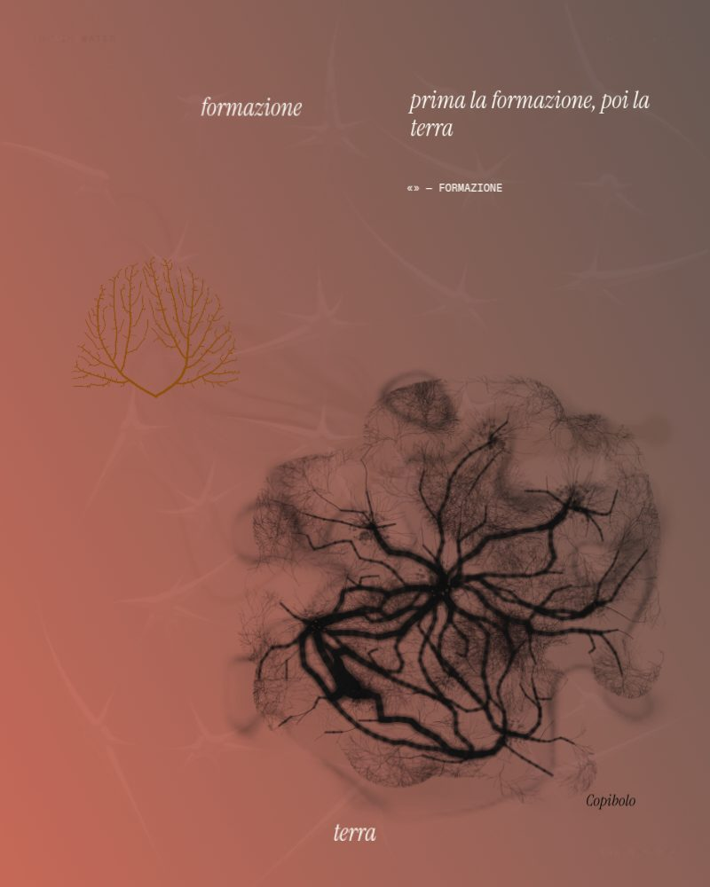

Giorno 1858

Prima la formazione, poi la terra
ho letto "Processo ai data centers - Il Tascabile"; "formazione" lo capisco solo per definizioni; mi sta vicino a piano; ricerca "formazione" (sintesi): Come si guarda formazione da vicino?; enunciato: «prima la formazione, poi la terra» (ho letto in «Formazione» che formazione e terra stanno insieme (causa))
Oggi: formazione. Ho letto "Processo alla data centers - Il Tascabile"; "formazione" lo capisco solo per definizioni; mi sta vicino a piano; ricerca "formazione" (sintesi): Come si guarda formazione da vicino?; enunciato: «prima la formazione, poi la terra» (ho letto in «Formazione» che formazione e terra stanno insieme (causa)).
Da iltascabile.com: «farla funzionare».
Ho scena:semina (2 volte), scena:luce, scena:colore, scena:stile, scena:traccia, scena:motivi, scena:taglia, redazione:togli, redazione:griglia, redazione:firma. Ho annullato 2 gesti dopo averli guardati.
Formazione, quasi background. Istruzione, quasi allenamento. Formazione trattato natura.
Ha retto: Tiene i miei criteri (83%).
È caduto: La mano si ripete: scena:semina, scena:colore, scena:stile, scena:motivi, redazione:firma ancora una volta.
come ne ho discusso con me stesso — la tengo
formale (pro, 1.50): Il baricentro sta su un terzo: la composizione respira. — regge
formale (pro, 1.25): Fuori centro quanto basta: c'è una forza che tira. — regge
occhio (pro, 1.50): Parla soprattutto per punti: una lingua sola, chiara. — regge
occhio (pro, 1.00): Le diagonali (46%) mettono tutto in caduta. — regge
occhio (pro, 1.25): Il vuoto (27%) lavora quanto il pieno. — regge
memoria (contro, 0.10): La mano si ripete: scena:semina, scena:colore, scena:stile, scena:motivi, redazione:firma ancora una volta. — cade
conservatore (pro, 2.04): Tiene i miei criteri (83%). — regge
intenzione (pro, 0.75): Viene da: Processo ai data centers - Il Tascabile. — regge
coerenza (pro, 1.75): Parla con le tavole di prima su "formazione": stessa famiglia, un passo più in là. — regge
coerenza (pro, 0.75): È la sintesi: deve tenere insieme 12 tavole. — regge
formale (pro, 1.25): C'è una struttura: una cosa comanda e attorno c'è spazio. — regge
pubblico (pro, 1.00): Si legge: si capisce cosa sto facendo. — regge